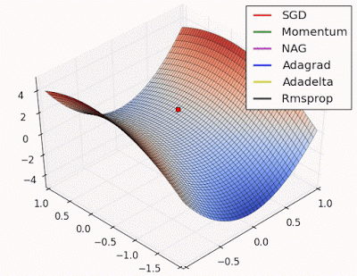
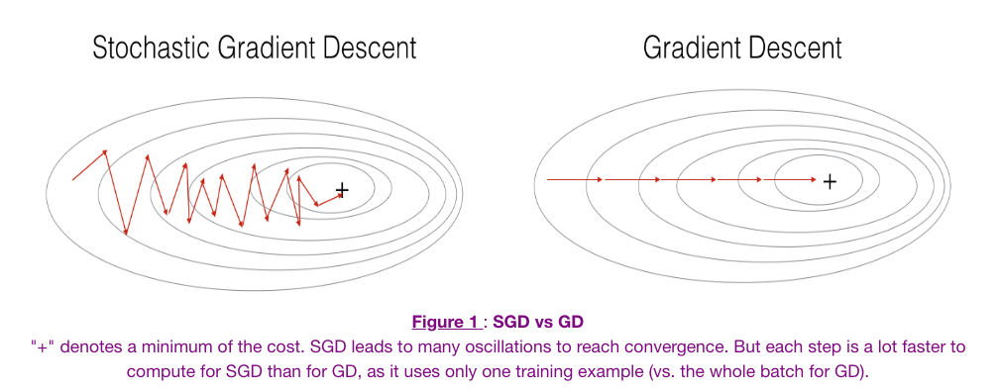
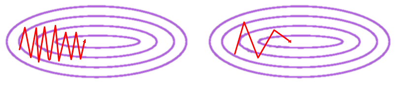
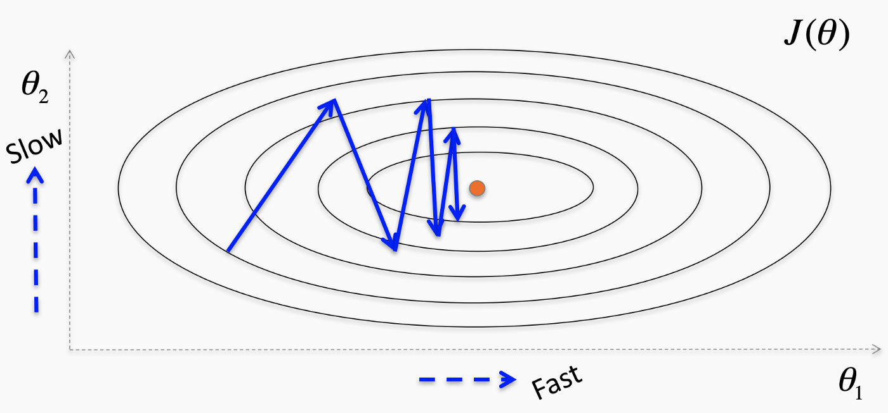
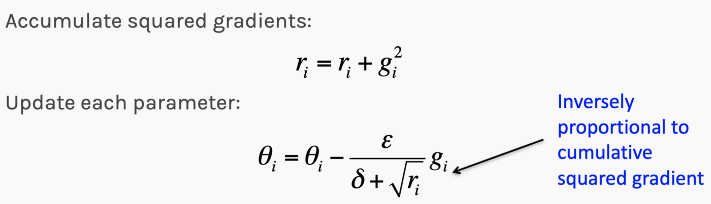
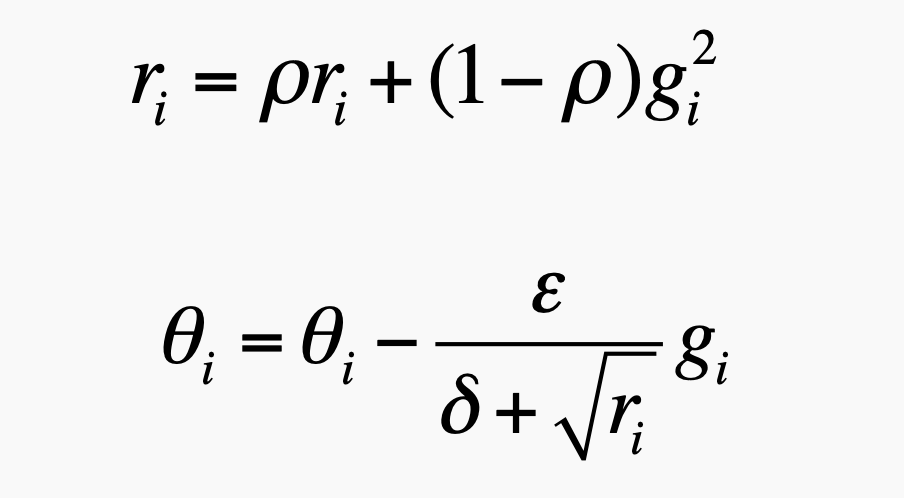

Solving non-convex optimization problems
Adarsh Kuthuru
Introduction
The process of selecting an appropriate algorithm to resolve non-linear (non-convex) optimization issues relies on several pivotal factors, including:
- The learning speed and convergence rate of the algorithm (significantly influenced by its initialization)
- Strategies to handle situations where the solution becomes trapped in local optima or saddle points
- The algorithm's responsiveness to new data, that is, if the training dataset doesn't accurately reflect the entire population, how well would the algorithm perform with test data?

Animation of Non-Convex Objective Optimization process
Front View (Left), Top view (Right)
Potential Difficulties in Using Neural Networks for Non-Convex Optimizations Instead of Genetic Algorithms
- Hyperparameter Optimization:
Neural Networks, in contrast to Genetic Algorithms, have more hyperparameters that need to be fine-tuned. These include parameters like the learning rate (required for gradient descent approaches), the number of hidden layers, the count of neurons in each layer, and the choice of activation functions, among others. Furthermore, factors like the number of iterations or epochs needed can be taken into consideration. Optimizing all these parameters may take substantial computational time, making it at least an NP-Hard problem. - Cost Function Conditioning:
Unlike Genetic Algorithms, which don't rely on the minimization of error terms (cost function), Neural Networks necessitate the minimization of the residual term to fit a model. This might lead to a condition known as poor function conditioning.
Hessian matrices, composed of second-order partial derivatives of cost functions with respect to input variables, depict the local curvature of these functions along different axes.
- Vanishing/Exploding Gradient Problem:
During forward propagation, random weights are assigned to nodes in neural networks, which are then transformed using an activation function to fit a non-linear model. In the process of backward propagation, the weights (slope) and the constant (intercept) are adjusted to minimize the cost function according to the following formula. This weight adjustment approach is known as gradient descent.
However, there are scenarios where this gradient becomes extremely small (approaching zero), due to the characteristics of the activation functions, saddle points, or local minima, which result in weights that do not update - a phenomenon known as the vanishing gradient problem. Conversely, if the gradient becomes extremely large (approaching infinity), we encounter what's known as the exploding gradient problem. In sequential models such as Recurrent Neural Networks or Long Short-Term Memory models (RNN/LSTM), commonly used in NLP, these scenarios correspond to zero correlation with the previous state and 100% correlation, respectively.
fig. Learning and converging rates of some Neural network extensions that I will talk about below
Various solutions have been proposed to address these issues, such as gradient clipping (where the gradients are constrained by a threshold), the use of activation functions like Rectified Linear Units (ReLU), and methods like Stochastic Gradient Descent (SGD - which introduces a stochastic term to gradient descent and updates weights in a randomized manner), Momentum, NAG, Adaptive Learning Rate, Adagrad, Adadelta, and RMSProp, among others.
- Stochastic Gradient Descent:
The above visualization indicates that SGD could potentially get stuck in local minima. However, it's important to note that this doesn't completely eliminate its applicability in all scenarios. - Stochastic Gradient Descent with Momentum:
When faced with curvature, conventional SGD may oscillate, potentially slowing convergence. Consequently, the SGD with momentum approach was suggested, where gradients are averaged to reduce oscillations and accelerate the path to optimization. - Adaptive learning rate:
The visualization below represents the minimization of the cost function 'J' which is a function of parameters Θ1 & Θ2. The idea is to adjust the magnitude of oscillations proportionally to the range of the parameter. Therefore, lower learning rates are considered for lower oscillations and higher rates for higher oscillations. - AdaGrad:
In the AdaGrad method, rather than adding a random term to the gradient to update weights as done in SGD, parameters are updated to guide the path to optimization more accurately. This update factor is proportional to the relevance of the parameter, thus earning its 'adaptive' name.One benefit of AdaGrad is the decreased reliance on manual adjustment of the learning rate, potentially aiding progress along directions with gentler slopes.
- RMSProp:
Although AdaGrad can be beneficial, it may not perform well for non-convex problems as it can potentially decrease the learning rate too rapidly. RMSProp addresses this issue by giving higher weights to steeper slopes, enhancing the speed of optimization.
Fig. Stochastic Gradient Descent Vs Gradient Descent Fig. (Left) Regular SGD, (right) SGD with Momentum.
Goodfellow, I., Bengio, Y. and Courville, A. (2016). Deep learning. MIT press.Fig. Adaptive learning rates. Fig. AdaGrad gradient updation. where, θi = ith parameter;
ri = cumulative gradient of ith parameter;
gi = current gradient of ith parameter;
δ, ε ~ N(0,1) (iid)
Fig. RMSProp exponential gradient updation Conclusion:
While the use of Neural Networks for non-convex optimizations presents certain complexities, it remains a powerful tool when correctly adjusted. However, there is a trade-off to consider: highly accurate models may require longer convergence times, and the use of approximations may lead to poor conditioning, resulting in slower learning rates and rapid output changes in response to slight input variations. This is because the optimization process may not be stable.
Genetic Algorithms, on the other hand, are explicitly designed for solving optimization problems and, as such, do not face most of the challenges encountered by Neural Networks. However, they employ a heuristic approach, meaning that some approximations are inherent, and solutions may not be perfectly accurate. The question to ask when selecting an algorithm for our optimization problem is our tolerance for accuracy and speed. By mapping out the accuracy levels and convergence times for these algorithms, we can make an informed selection.
In conclusion, although Genetic Algorithms can often be the go-to solution for non-convex optimizations, other factors such as accuracy, ease of customization, and others should also be considered when selecting the most suitable algorithm.
- Stochastic Gradient Descent: